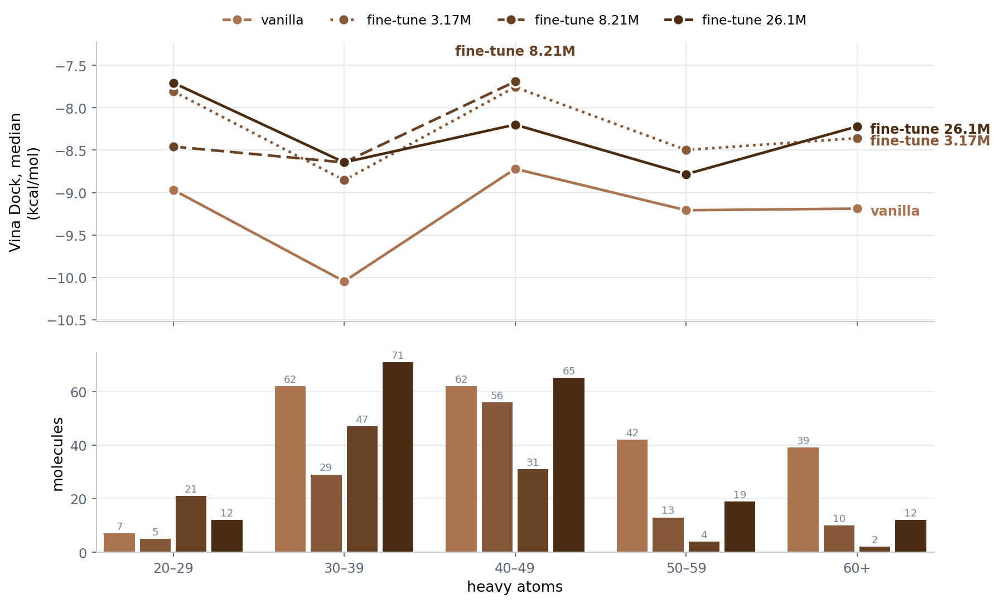

Agenda for the 09-10 meeting. Section 1 carries the MCP design results, measured at 26.1M fine-tuning samples; Section 2 collects the VoxBind experiment results and is still a placeholder.
Mid-training check on the receptor-ED density fine-tune of the macrocyclic-peptide generator, sampled at 26.1M fine-tuning samples and scored against the same run at 8.21M (the 08-27 meeting) and 3.17M (08-20), plus the density-free vanilla FuncBind. Same 10 held-out targets and the same sampling budget every round, so all four arms are directly comparable. measured
fb_unified, density-free, 87.2M samples seen — the
“vanilla” arm, unchanged since 08-20 and never re-sampled (same checkpoint, settings and seed,
so its 08-20 molecules remain the baseline).acc_iter (fine-tuning samples seen, base
model's 87.2M not included): _r3 3.17M, _r10 8.21M, _r14
26,112,876. Never rank these by epoch — every resume restarts the epoch counter, so
_r14 reads epoch 24 while being the furthest along of 15 runs.<pdb>-protein.pdb), box from the crystal
cyclic peptide (<pdb>-CP.sdf), Vina exhaustiveness 16.Molecules returned per target out of a 25-molecule quota, on an identical budget. The yield collapse that dominated the 08-27 reading has largely reversed: 106 → 186 molecules and 2 → 5 targets at full quota. 1jd2 and 1kmh recovered from 6 and 1 molecules to 18 and 19; 3e7a is the one target that stayed broken across all three fine-tune checkpoints.
| Target | PDB | vanilla | ft 3.17M | ft 8.21M | ft 26.1M | Δ vs 8.21M |
|---|---|---|---|---|---|---|
| target_00 | 1bm2 | 25 | 25 | 25 | 25 | 0 |
| target_01 | 1bxo | 25 | 9 | 13 | 14 | +1 |
| target_02 | 1jd2 | 25 | 2 | 6 | 18 | +12 |
| target_03 | 1kmh | 25 | 3 | 1 | 19 | +18 |
| target_04 | 1w0e | 14 | 25 | 25 | 25 | 0 |
| target_05 | 2bdx | 25 | 25 | 10 | 25 | +15 |
| target_06 | 2gpl | 25 | 17 | 14 | 25 | +11 |
| target_07 | 3dv5 | 0 | 0 | 1 | 3 | +2 |
| target_08 | 3e7a | 24 | 7 | 6 | 7 | +1 |
| target_09 | 3egh | 25 | 5 | 5 | 25 | +20 |
| Total | — | 213 | 118 | 106 | 186 | +80 |
| Targets at full quota | — | 7 / 10 | 3 / 10 | 2 / 10 | 5 / 10 | +3 |
Size, QED, SA, Vina and ligand efficiency are pooled over molecules; validity, uniqueness, diversity and high affinity are per-target means, as the docking driver reports them. Everything here uses the 9 targets all four arms produced molecules for (3dv5 is excluded — only the two newest checkpoints have anything there). Cyclization and validity are 100% on every arm: nothing is structurally broken in any round.
| Metric | vanilla | ft 3.17M | ft 8.21M | ft 26.1M |
|---|---|---|---|---|
| Molecules (9 targets) | 213 | 118 | 105 | 183 |
| Validity / cyclization | 1.000 / 100% | 1.000 / 100% | 1.000 / 100% | 1.000 / 100% |
| Uniqueness | 0.982 | 0.982 | 0.984 | 0.988 |
| Diversity | 0.475 | 0.468 | 0.454 | 0.474 |
| Heavy atoms, mean / median | 47.9 / 46 | 47.7 / 45 | 36.9 / 35 | 42.6 / 41 |
| Under 40 heavy atoms | 32% | 29% | 65% | 45% |
| Residues per molecule | 6.6 | 6.8 | 5.9 | 6.2 |
| QED | 0.200 | 0.211 | 0.344 | 0.274 |
| SA | 0.490 | 0.501 | 0.554 | 0.523 |
| Vina Dock, median | −9.34 | −8.15 | −8.38 | −8.33 |
| Vina Dock, mean | −9.44 | −7.77 | −8.54 | −8.26 |
| Ligand efficiency, median | 0.194 | 0.182 | 0.240 | 0.208 |
| High affinity (vs crystal peptide) | 0.420 | 0.256 | 0.314 | 0.310 |
| Best of the four, per target | 7 / 9 | 0 / 9 | 2 / 9 | 0 / 9 |
QED, SA and ligand efficiency all track size rather than quality here — they rise when the peptides shrink and fall when they grow back, which is exactly what the 8.21M and 26.1M columns do. The one metric that does not move is Vina Dock: −8.15, −8.38, −8.33 across an 8× span of fine-tuning, against vanilla's −9.34.

| Heavy atoms | vanilla | ft 3.17M | ft 8.21M | ft 26.1M | ||||
|---|---|---|---|---|---|---|---|---|
| n | Dock med | n | Dock med | n | Dock med | n | Dock med | |
| 20–29 | 7 | −8.97 | 5 | −7.80 | 21 | −8.46 | 12 | −7.71 |
| 30–39 | 62 | −10.05 | 29 | −8.86 | 47 | −8.64 | 71 | −8.64 |
| 40–49 | 62 | −8.72 | 56 | −7.75 | 31 | −7.69 | 65 | −8.20 |
| 50–59 | 42 | −9.21 | 13 | −8.50 | 4 | — | 19 | −8.78 |
| 60+ | 39 | −9.19 | 10 | −8.36 | 2 | — | 12 | −8.22 |
Vanilla is best in every bin, by 0.4 to 1.4 kcal/mol, in all three rounds. The three fine-tune checkpoints sit on top of each other: 26.1M is the best of them at 40–49 and 50–59 and the worst at 20–29, which is the pattern of noise, not of progress. What 26.1M did buy is coverage — it is the only fine-tune arm with enough molecules to be readable in all five bins.
n_attempts=1 against the paper configuration's 10, so absolute
yields are low for every arm. The budget is identical across arms, so the comparison holds, but the yields
are relative numbers._r15.Placeholder for the VoxBind experiment results. placeholder